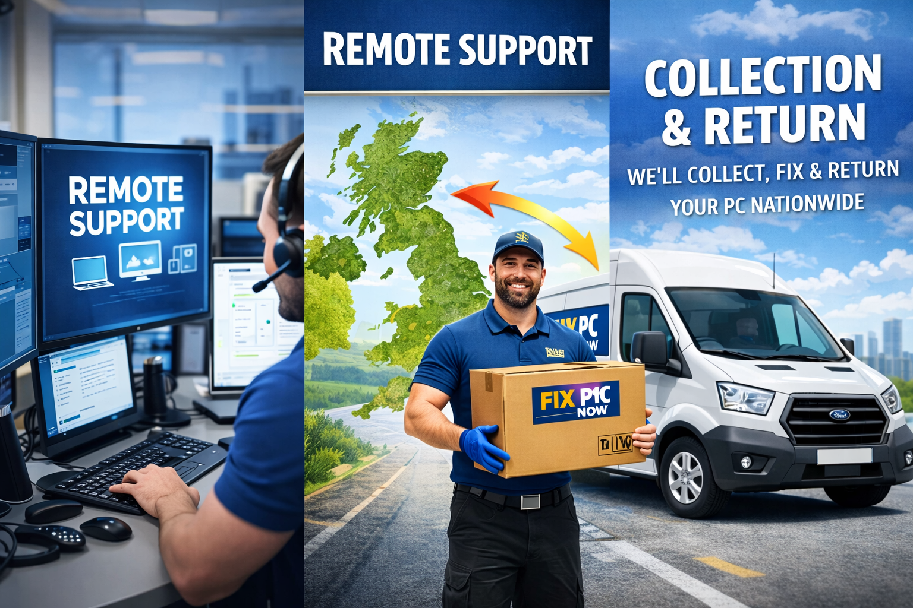

Remote computer repair UK · online computer repair service · same day computer repair
Remote PC Support UK – Online Computer Repair Service
Our remote computer repair UK service fixes software faults without needing a visit. We handle virus removal, software troubleshooting, blue screen repair, and slow computer fixes.

Remote issues we fix
virus removal service UK, operating system reinstall, pc optimisation service, email issues, file fixes, and system crashes.
How it works
- 1.Download Remote Utilities.
- 2.Share the ID and password displayed by the app.
- 3.We connect and fix the issue in real time.